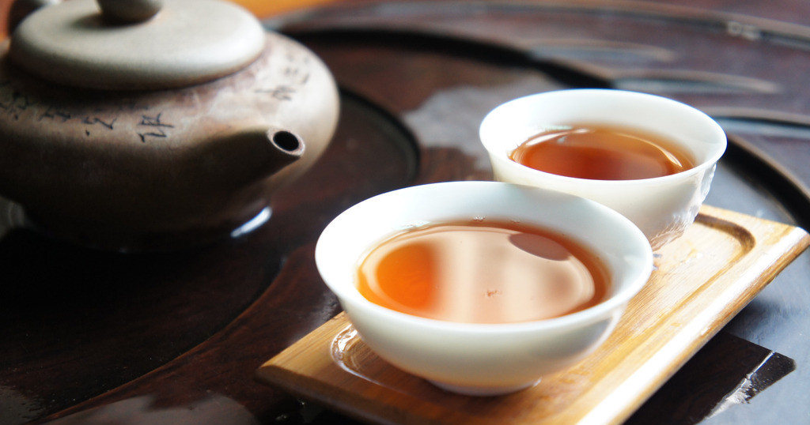

关于茶文化的知识
发表于：2016.9.9
茶是劳动生产物，是一种品位。茶文化是以茶为载体，并通过这个载体来传播各种艺术。茶文化是中国传统优秀文化的组成部分，其内容十分丰富。 茶文化，是茶与文化的有机融合 ，这包含和体现一定时期的物质文明和精神文明。 茶文化是茶艺与精神的结合，并通过茶艺表现精神。兴于中国唐代，盛于宋、明代，衰于清代。中国茶道的主要内容讲究五境之美，即茶叶、茶水、火候、茶具、环境。 茶文化要遵循一定的法则。唐代为克服九难 ，即造、别、器、火、水、炙、末、煮、饮。宋代为三点与三不点品茶，“三点”为新茶、甘泉、洁器为一，天气好为一，风流儒雅、气味相投的佳客为一。“三不点”为茶不新、泉不甘、器不洁，是为一不；景色不好，为一不；品茶者缺乏教养举止粗鲁又为一不，共为三不。碰到这种情况，最好是不作艺术的品饮，以免败兴。中国人饮茶，注重一个“品”字，凡来了客人，沏茶、敬茶的礼仪是必不可少的。当有客来访，可征求意见，选用最合来客口味和最佳茶具待客。以茶敬客时，对茶叶适当拼配也是必要的。主人在陪伴客人饮茶时，要注意客人杯、壶中的茶水残留量，一般用茶杯泡茶，如已喝去一半，就要添加开水，随喝随添，使茶水浓度基本保持前后一致，水温适宜。在饮茶时也可适当佐以茶食、糖果、菜肴等，达到调节口味和点心之功效。
赞
评论
分享
下一篇：武夷山之旅


评论区
此路不通
1楼
评论时间：2016-11-20 18:12:32
回复看来我应该多努力些才行，要不然我的博客就这么一直没有流量下去，岂不是太过于冷冷清清了？
此路不通
1楼
评论时间：2016-11-20 18:12:32
回复看来我应该多努力些才行，要不然我的博客就这么一直没有流量下去，岂不是太过于冷冷清清了？
此路不通
1楼
评论时间：2016-11-20 18:12:32
回复看来我应该多努力些才行，要不然我的博客就这么一直没有流量下去，岂不是太过于冷冷清清了？
发表评论